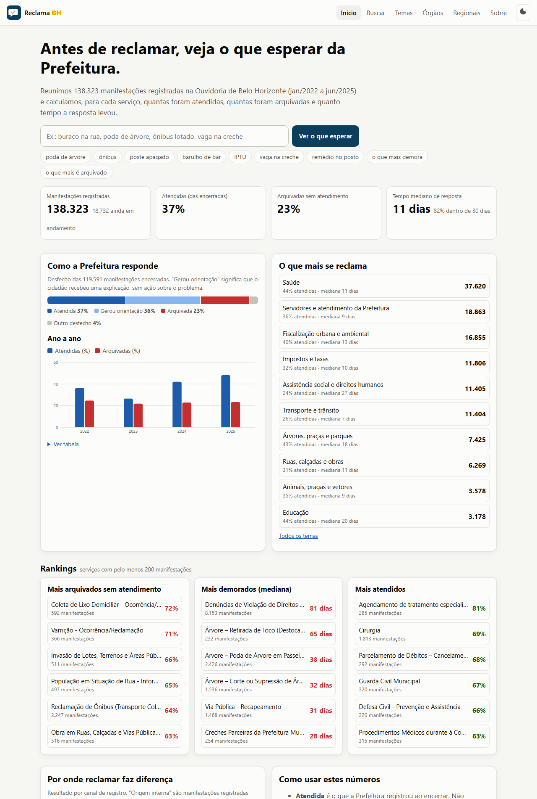
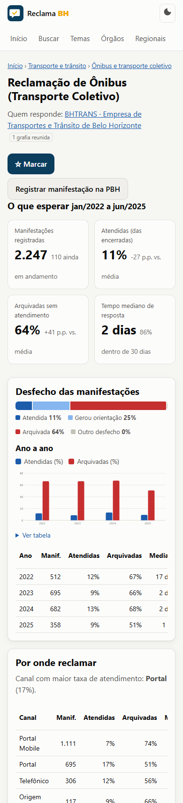
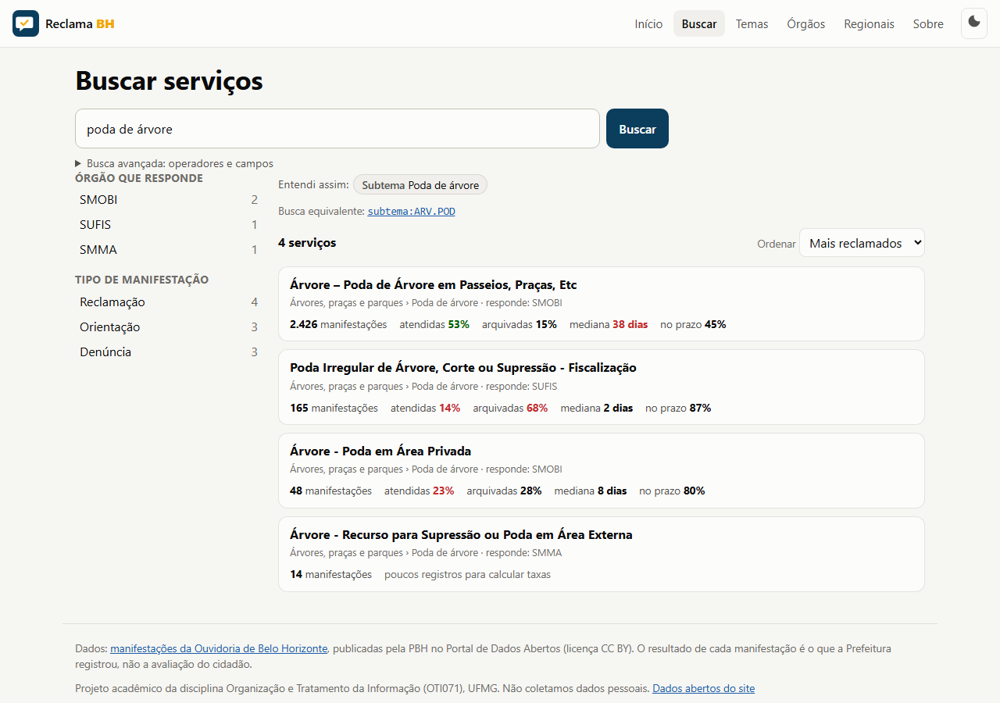
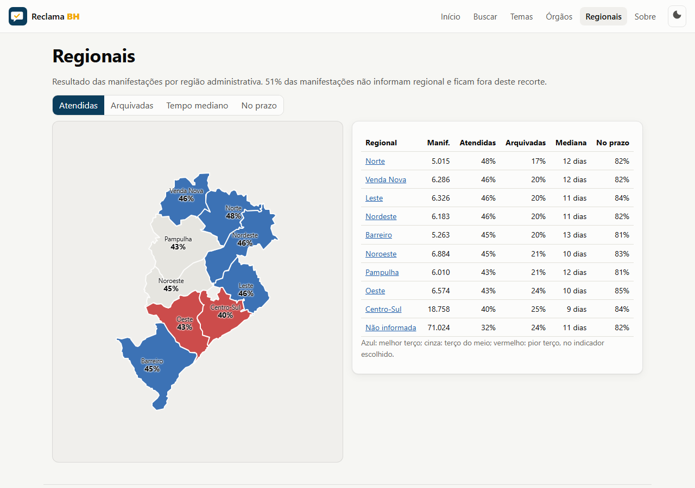
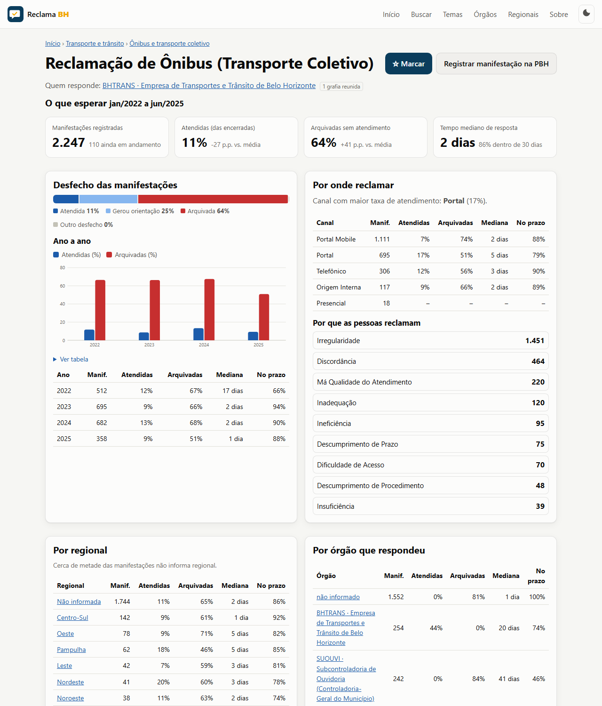

Filipe Davi Gomes Nathan Filipe Izidorio Alves Victor Cunha Marques
RECLAMA BH: o que Belo Horizonte reclama e como a Prefeitura responde
Trabalho apresentado à disciplina Organização e Tratamento da Informação (OTI071) do curso de Sistemas de Informação da Universidade Federal de Minas Gerais, como requisito parcial de avaliação – Projeto Aplicado, Etapa 2: Desenvolvimento da solução (trabalho completo).
Professora: Patrícia Nascimento Silva
Belo Horizonte 2026
Sumário
1
Diagnóstico
3
1.1
Nome e logomarca da solução
3
1.2
Descrição da aplicação, contexto e perfil do usuário da informação
3
1.3
Problema e objetivo da solução
4
1.4
Justificativa e motivação do grupo
5
1.5
Limitações, impactos e esclarecimentos
6
2
Definição dos requisitos
7
2.1
Conceitos e termos utilizados na aplicação
7
2.2
Requisitos funcionais e não funcionais
8
2.3
Requisitos de gestão arquivística
8
3
Métodos e técnicas de organização da informação
10
3.1
Fontes de informação e regras de tratamento
10
3.2
Tratamento temático
11
3.3
Tratamento descritivo
13
3.4
Gestão arquivística
14
4
Modelo de recuperação da informação
15
4.1
Recursos da aplicação para recuperação da informação
15
5
Modelagem da solução
17
5.1
Pipeline dos dados e modelo entidade-relacionamento
17
5.2
Solução desenvolvida
20
6
Considerações finais
24
Referências
25
1 Diagnóstico
Quem registra uma reclamação na Ouvidoria da Prefeitura de Belo Horizonte não sabe o que vai acontecer com ela: se será atendida, arquivada ou apenas respondida com uma orientação, nem quanto tempo isso leva. A Prefeitura publica, no Portal de Dados Abertos, todas as manifestações recebidas desde 2022, com o serviço reclamado, o órgão responsável, o tempo de tramitação e o desfecho (PREFEITURA DE BELO HORIZONTE, 2025). A resposta à pergunta existe, portanto, mas está num formato que só quem domina ferramentas de tratamento de dados consegue ler. A seção 1 descreve esse problema e a solução proposta; as seções 2 a 5 detalham os requisitos, as técnicas de organização da informação, o modelo de recuperação e a solução desenvolvida.
1.1 Nome e logomarca da solução
A solução se chama Reclama BH, com o lema “O que BH reclama e como a Prefeitura responde”. O nome junta o verbo que descreve a ação do cidadão ao nome da cidade; o lema diz os dois lados que o sistema mostra: a demanda e a resposta.
Figura 1 – Logomarca do Reclama BH
Fonte: Elaborado pelos autores (2026).
A logomarca (Figura 1) é um balão de fala, que representa a manifestação do cidadão, com uma marca de verificação em âmbar, que remete à pergunta central do sistema: a manifestação foi atendida? O fundo azul-escuro remete à confiabilidade de dados oficiais.
1.2 Descrição da aplicação, contexto e perfil do usuário da informação
O Reclama BH é um site, acessível por celular e computador, que organiza as manifestações da Ouvidoria e responde, para cada serviço público municipal, o que se pode esperar de uma reclamação. A página de cada serviço informa quantas manifestações houve, qual proporção foi atendida, qual foi arquivada, quanto tempo a resposta levou e se o prazo de trinta dias previsto em lei foi cumprido (BRASIL, 2017). Mostra também por qual canal (telefone 156, portal, aplicativo, presencial) a reclamação daquele serviço costuma ter melhor resultado, a evolução ano a ano e os recortes por regional e por órgão responsável.
O cidadão encontra o serviço escrevendo do seu jeito (“poste apagado”, “barulho de bar”, “vaga na creche”); o sistema traduz a expressão para o nome oficial usado pela Prefeitura. Também há rankings dos serviços mais arquivados, mais demorados e mais atendidos, e páginas por tema, por órgão e por regional. O site não exige cadastro nem coleta dados pessoais.
Iniciativas parecidas existem. A Controladoria-Geral da União mantém o Painel Resolveu?, que mostra resolutividade e tempo de resposta das ouvidorias que usam o sistema federal Fala.BR, inclusive de municípios (CONTROLADORIA-GERAL DA UNIÃO, 2025). A Ouvidoria de Belo Horizonte, porém, usa um sistema próprio, o BH Digital, e divulga apenas totais e relatórios por secretaria. Não encontramos, para a cidade, nenhuma ferramenta com recorte por serviço, comparação entre canais de registro e busca pela linguagem do cidadão, que é o que o Reclama BH se propõe a fazer.
O contexto é o da Lei nº 13.460/2017, que garante ao usuário de serviço público o direito de se manifestar e de receber resposta em até trinta dias, e o da política de dados abertos, que levou a Prefeitura a publicar os registros da Ouvidoria (BRASIL, 2011; PREFEITURA DE BELO HORIZONTE, 2025). Entre janeiro de 2022 e junho de 2025 foram 138.323 manifestações, a maioria reclamações, seguidas de denúncias, pedidos de orientação, sugestões e elogios.
O usuário principal é o cidadão prestes a reclamar, que não conhece o nome administrativo do serviço nem o órgão que responde, e não tem como calibrar sua expectativa. O Quadro 1 resume os perfis de usuário e suas necessidades de informação.
Quadro 1 – Perfis de usuário e necessidades de informação
Perfil
Necessidade de informação
Cidadão prestes a reclamar
Saber se vale a pena registrar a manifestação, por qual canal, quanto tempo leva e qual a chance de atendimento.
Jornalistas e comunicadores comunitários
Identificar serviços e órgãos com pior desempenho e comprovar afirmações com dados oficiais.
Vereadores, conselhos e associações de bairro
Acompanhar a resposta da Prefeitura numa regional ou numa política pública.
Ouvidoria e controle interno
Ver os próprios dados organizados por assunto e comparar canais e órgãos.
Pesquisadores
Obter uma base limpa e documentada sobre ouvidoria municipal.
Fonte: Elaborado pelos autores (2026).
1.3 Problema e objetivo da solução
O problema é de organização da informação: os dados existem e são públicos, mas são irrecuperáveis para o cidadão. Ao examinar os arquivos publicados pela Prefeitura, o grupo identificou os seguintes obstáculos:
a) cada ano é um arquivo CSV com uma linha por encaminhamento, e não por manifestação: são 259.033 linhas para 138.323 manifestações, e um mesmo protocolo chega a aparecer 1.442 vezes;
b) os nomes dos serviços não são controlados: há 1.744 grafias diferentes para cerca de 1.670 serviços. O mesmo serviço aparece como “Vacinação” e “Vacinação de rotina para a população”, e muitos nomes trazem “?” no lugar do travessão (“Árvore ? Poda de Árvore”);
c) os órgãos responsáveis aparecem só por sigla (SMSA, SUFIS, SUCOR), sem o nome por extenso;
d) não há agrupamento por assunto: o cidadão que quer saber de “buraco na rua” precisaria adivinhar que o serviço se chama “Via Pública - Recapeamento”;
e) não há dicionário de dados publicado junto, e o arquivo de cada ano é substituído a cada mês, sem histórico;
f) o arquivo tem centenas de milhares de linhas, inacessível sem software de tratamento de dados.
A Tabela 1 mostra o tipo de informação que fica escondida nesses arquivos. Reclamações de ônibus, por exemplo, são respondidas em dois dias, mas 64% são arquivadas sem atendimento; denúncias de violação de direitos humanos levam, em mediana, 81 dias.
Tabela 1 – Resposta da Prefeitura a serviços selecionados (janeiro de 2022 a junho de 2025)
Serviço
Manifestações
Atendidas
Arquivadas
Mediana (dias)
No prazo
Denúncias de Violação de Direitos Humanos
8.153
25%
2%
81
12,5%
Denúncia sobre Servidores Municipais
3.911
8,5%
27%
11
92%
Árvore – Poda de Árvore em Passeios, Praças, Etc
2.426
53%
15%
38
45%
Reclamação de Ônibus (Transporte Coletivo)
2.247
11%
64%
2
86%
Cirurgia
1.813
69%
8%
13
89%
Lei de Acesso à Informação - LAI
707
2%
37%
2
98%
Coleta de Lixo Domiciliar - Ocorrência/Reclamação
592
13%
72%
2
93%
Fonte: Elaborado pelos autores (2026), a partir de Prefeitura de Belo Horizonte (2025). Taxas calculadas sobre as manifestações encerradas; “no prazo” é a proporção respondida em até trinta dias.
O objetivo geral é organizar as manifestações da Ouvidoria de Belo Horizonte de modo que qualquer cidadão descubra, antes de reclamar, como a Prefeitura costuma responder ao serviço que lhe interessa. Os objetivos específicos são:
a) reunir as linhas repetidas em uma manifestação por protocolo e padronizar os nomes de serviço e de órgão;
b) agrupar os serviços por tema, para que possam ser encontrados pelo problema e não pelo nome administrativo;
c) permitir a busca na linguagem do cidadão, com filtros e operadores para quem quiser refinar;
d) calcular e apresentar, por serviço, tema, órgão, regional, canal e ano, a taxa de atendimento, a taxa de arquivamento, o tempo de resposta e o cumprimento do prazo legal;
e) preservar os arquivos originais publicados pela Prefeitura, com registro de origem e integridade, já que o portal os substitui a cada mês;
f) disponibilizar os indicadores em formato aberto.
1.4 Justificativa e motivação do grupo
A Ouvidoria é o instrumento que o cidadão comum tem para cobrar a Prefeitura, e ninguém sabe se ele funciona. Mostrar a resposta da Prefeitura, serviço por serviço, ajuda o cidadão a decidir por onde reclamar, dá base a jornalistas e vereadores e devolve à própria administração um retrato de onde a resposta falha. É uma aplicação direta do que o desafio “Dados Abertos, IA e Impacto Social” propõe (CONTROLADORIA-GERAL DA UNIÃO, 2026).
Para a disciplina, o conjunto de dados é um caso típico de problema de organização da informação: exige controle de vocabulário, classificação por assunto, descrição por metadados, recuperação por busca e gestão das versões dos arquivos. Cada técnica estudada tem um uso necessário na solução.
Quanto à motivação, somos estudantes que já usamos a Ouvidoria e o telefone 156 e conhecemos a experiência de registrar uma manifestação sem saber o que esperar. Ao abrir os dados, vimos que a resposta estava lá, mas escondida atrás de 259 mil linhas, 1.744 nomes de serviço e siglas sem explicação. Organizar isso nos pareceu útil para a cidade e adequado ao que aprendemos no curso.
1.5 Limitações, impactos e esclarecimentos
A principal limitação é que o desfecho de cada manifestação é o que a Prefeitura registrou ao encerrá-la: “atendida” não significa que o cidadão ficou satisfeito, e “arquivada” pode ter motivos legítimos, como dados insuficientes ou assunto de outro ente. O sistema mostra o comportamento da resposta, não a qualidade do serviço na rua.
Os dados publicados vão até junho de 2025; a Prefeitura não divulgou arquivos mais recentes até a data deste trabalho. Metade das manifestações não informa a regional e um terço não informa o órgão responsável, o que limita os recortes territoriais e por órgão. Não há dicionário de dados oficial: o significado dos campos de prazo e de situação foi inferido dos próprios dados e da Lei nº 13.460/2017. O agrupamento por tema é feito pelo nome do serviço e pode errar em casos de fronteira. Manifestações ainda em andamento não entram nas taxas, o que pode inflar o resultado dos meses mais recentes.
O impacto esperado é dar ao cidadão uma expectativa realista antes de reclamar e apontar, com dados oficiais, os serviços e órgãos em que a resposta falha. Os dados da Ouvidoria já são publicados sem identificação do cidadão, e o sistema não coleta nenhum dado pessoal (BRASIL, 2018). Todos os números apresentados neste documento foram calculados pelo grupo a partir dos arquivos publicados pela Prefeitura e podem ser reproduzidos.
2 Definição dos requisitos
2.1 Conceitos e termos utilizados na aplicação
Dahlberg (1978) define o conceito como a unidade de conhecimento formada por um referente, pelas características que o delimitam e pelo termo que o designa. Num sistema que conta coisas, a definição precisa dizer também como o conceito é reconhecido nos dados; caso contrário, contam-se coisas diferentes com o mesmo nome. O Quadro 2 apresenta os conceitos centrais do Reclama BH com a definição e a definição operacional, que é a aplicada literalmente pelo código.
Quadro 2 – Sistema de conceitos do Reclama BH
Termo
Definição
Definição operacional
Manifestação
Registro formal feito por um cidadão junto à Ouvidoria sobre um serviço público: reclamação, denúncia, sugestão, elogio ou pedido de orientação.
Um número de protocolo distinto. As linhas repetidas do arquivo (uma por encaminhamento) são reunidas numa só manifestação.
Serviço
Serviço ou atividade da Prefeitura sobre o qual o cidadão se manifesta, com o nome do catálogo de serviços da PBH.
Campo “Serviço”, após controle de autoridade: variantes de grafia reunidas sob a forma autorizada.
Tema e subtema
Agrupamento dos serviços por assunto, em dois níveis, para que o cidadão encontre o serviço pelo problema que vive.
Atribuídos automaticamente pelas regras da taxonomia sobre o nome normalizado do serviço.
Motivo
Razão da manifestação, segundo o vocabulário controlado da própria Ouvidoria.
Valores do campo multivalorado “Assunto”; os que identificam grupos prioritários vão para uma faceta própria.
Órgão responsável
Unidade da Prefeitura que respondeu à manifestação.
Primeira sigla do campo “Responsável pela Resposta”, conferida na lista de autoridade; vazio vira “não informado”.
Manifestação encerrada
Manifestação cuja tramitação terminou e recebeu um desfecho.
Campo “Etapa” igual a “Encerrado”; as demais contam como “em andamento” e ficam fora das taxas.
Resultado
Atendida, gerou orientação, arquivada ou outro desfecho.
Campo “Situação da demanda”. É o que a Prefeitura registrou, não a avaliação do cidadão.
Taxa de atendimento
Proporção das manifestações encerradas registradas como atendidas.
atendidas ÷ encerradas, no recorte escolhido.
Taxa de arquivamento
Proporção das encerradas arquivadas sem atendimento.
arquivadas ÷ encerradas.
Tempo de tramitação
Dias entre o registro e o encerramento.
Campo “Dias em tramitação com a PBH”, só para encerradas; resumido pela mediana.
Prazo legal
Trinta dias, prorrogáveis uma vez (Lei nº 13.460/2017, art. 16).
Campo “SLA”: no prazo até 30 dias; atenção de 31 a 60; crítico acima de 60.
Canal
Meio de registro: portal, aplicativo, telefone 156, presencial ou origem interna.
Campo “Canal de captação”.
Versão do conjunto de dados
Arquivo CSV anual publicado pela PBH numa data; cada publicação acumula os meses do ano e substitui a anterior.
Arquivo capturado, identificado por ano e último mês coberto, com hash SHA-256 e eventos de preservação no manifesto.
Fonte: Elaborado pelos autores (2026), a partir de pipeline/vocabulario/conceitos.json.
Duas escolhas merecem destaque. As taxas são calculadas sobre as manifestações encerradas, e não sobre o total, porque uma demanda em andamento ainda não tem resultado. O tempo de resposta é resumido pela mediana, e não pela média, porque a distribuição tem uma cauda longa de casos que ficam meses em tramitação.
2.2 Requisitos funcionais e não funcionais
Os requisitos foram levantados a partir das necessidades do Quadro 1 e estão todos implementados. O Quadro 3 os resume.
Quadro 3 – Requisitos funcionais (RF) e não funcionais (RNF)
Código
Requisito
RF01
Descobrir no portal da PBH, pela API CKAN, o arquivo mais completo de cada ano e baixá-lo quando houver versão nova.
RF02
Registrar cada versão capturada num manifesto com metadados descritivos e de preservação, mantendo as versões substituídas.
RF03
Reunir as linhas do arquivo em uma por manifestação e normalizar cabeçalhos, datas, prazos, situações e campos multivalorados entre os anos.
RF04
Aplicar controle de autoridade aos nomes de serviço e de órgão e classificar cada serviço em tema e subtema.
RF05
Calcular os indicadores por serviço, tema, subtema, órgão, regional, canal, tipologia e ano.
RF06
Oferecer busca em linguagem natural, interpretada pelo tesauro, que mostre como a pergunta foi entendida; como complemento, sugestões por similaridade semântica com modelo de linguagem executado no aparelho do usuário.
RF07
Oferecer busca booleana com operadores, parênteses, frase exata, truncamento e campos, com facetas e ordenação.
RF08
Apresentar, para cada serviço, a página “O que esperar”, com indicadores, comparação com a média, canal, regional, órgão, motivo e séries por ano e mês.
RF09
Permitir navegação por tema, órgão (tabela ordenável) e regional (mapa).
RF10
Publicar os indicadores em JSON com catálogo DCAT e documentar vocabulários, conceitos, arquivo e limitações no próprio site; executar o pipeline automaticamente todo mês.
RNF01
Funcionar em celulares e computadores, com leiaute responsivo, tema claro e escuro e instalação como aplicativo.
RNF02
Não coletar dados pessoais nem exigir cadastro: site estático, sem servidor de aplicação; preferências ficam só no navegador.
RNF03
Ser reproduzível: qualquer pessoa com Python 3.10 regenera os dados a partir dos originais, sem bibliotecas externas.
RNF04
Ser transparente: toda regra de tratamento, definição de indicador e regra de classificação é pública.
RNF05
Não mostrar taxas com amostra pequena: mínimo de 20 manifestações encerradas; rankings só com 200 ou mais.
RNF06
Ser acessível (navegação por teclado, textos alternativos, tabela alternativa para cada gráfico) e custar zero para operar.
Fonte: Elaborado pelos autores (2026).
2.3 Requisitos de gestão arquivística
O e-ARQ Brasil (CONSELHO NACIONAL DE ARQUIVOS, 2022) especifica o que um sistema informatizado deve cumprir para que os documentos nele mantidos sejam confiáveis, autênticos e acessíveis ao longo do tempo. O Reclama BH custodia os arquivos originais publicados pela Prefeitura e os indicadores que produz. O Quadro 4 relaciona os requisitos adotados.
Quadro 4 – Requisitos de gestão arquivística (e-ARQ Brasil) e sua implementação
Aspecto
Requisito adotado e situação
Captura e classificação
Todo arquivo publicado pela PBH é capturado sem alteração, recebe identificador único (ano e último mês coberto) e o código do plano de classificação (02.01.01). Implementado em coletar.py.
Integridade e fixidez
O hash SHA-256 é calculado na captura e conferido a cada verificação (coletar.py --verificar); qualquer alteração é detectada.
Trilha de auditoria
Todo evento sobre a versão (captura, verificação de fonte, verificação de fixidez, substituição) é registrado no manifesto com data, agente e resultado.
Metadados
Cada versão tem metadados descritivos (Dublin Core) e de preservação (PREMIS), descritos na seção 3.3.
Versões substituídas
Quando a PBH publica um arquivo mais completo do mesmo ano, a versão anterior não é apagada: muda para “substituída” e continua guardada. Implementado; ainda sem caso real, porque não houve publicação nova desde julho de 2025.
Temporalidade, armazenamento e acesso
Prazos e destinação definidos na tabela de temporalidade (seção 3.4). Os originais têm guarda permanente como releases do repositório; originais, base limpa, indicadores e vocabulários são acessíveis a qualquer pessoa, com licença indicada.
Segurança e privacidade
Não há dados pessoais no acervo e o sistema não os cria: o arquivo da PBH não traz nome, CPF nem texto livre.
Fonte: Elaborado pelos autores (2026), com base em Conselho Nacional de Arquivos (2022).
3 Métodos e técnicas de organização da informação
3.1 Fontes de informação e regras de tratamento
A fonte primária é o conjunto “Dados gerais das manifestações processadas pela Ouvidoria de Belo Horizonte no sistema BH Digital”, mantido pela Subcontroladoria de Ouvidoria no Portal de Dados Abertos da PBH sob licença Creative Commons Atribuição (PREFEITURA DE BELO HORIZONTE, 2025). São arquivos CSV anuais, com separador ponto e vírgula e codificação ISO-8859-1, publicados mês a mês de forma acumulada: o último arquivo de cada ano contém o ano inteiro. O sistema descobre automaticamente, pela API CKAN do portal, qual é o arquivo mais completo de cada ano. Estão vigentes quatro arquivos: 2022, 2023 e 2024 completos e 2025 até junho (publicado em 14/07/2025). A fonte auxiliar é o conjunto de polígonos das nove regiões administrativas, do BHGeo, usado no mapa.
Outras bases foram levantadas e descartadas. O Fala.BR, da Controladoria-Geral da União, não cobre a Ouvidoria de Belo Horizonte, que usa sistema próprio. O conjunto “Solicitações dos cidadãos por meio dos canais de atendimento” da PBH registra pedidos de serviço (o 156), e não manifestações de ouvidoria; é um cruzamento possível em trabalho futuro. Nenhuma das bases consultadas traz dados pessoais: o arquivo da Ouvidoria não tem nome, documento nem texto livre, só os campos de classificação do registro.
Os quatro arquivos somam 259.033 linhas. O tratamento aplicado por processar.py está resumido no Quadro 5; o efeito de cada regra é registrado em data/processed/limpeza.json.
Quadro 5 – Regras de tratamento dos dados
Nº
Regra
Justificativa e efeito
1
Normalizar os cabeçalhos por uma tabela de equivalência.
Os cabeçalhos variam entre anos (“Nº do ticket” e “N.º do ticket”) e 2023 tem uma coluna a mais; a leitura por posição misturaria colunas.
2
Reunir as linhas pelo número do protocolo, uma por manifestação; os campos de estado vêm da tramitação mais recente.
O arquivo tem uma linha por encaminhamento: 120.710 linhas são repetições. Resultado: 138.323 manifestações (36.070 em 2022, 35.455 em 2023, 44.791 em 2024 e 22.007 no primeiro semestre de 2025).
3
Converter datas para ISO 8601 e dias para inteiro; separar o campo multivalorado “Assunto” em motivos e grupos prioritários.
Permite agrupar por mês e ano. O campo “Assunto” mistura o motivo da reclamação com a vulnerabilidade do manifestante; misturá-los falsearia a contagem de motivos.
4
Considerar com resultado só as manifestações com Etapa “Encerrado”.
18.732 manifestações estão em andamento e não têm desfecho.
5
Interpretar o campo “SLA” como: no prazo (até 30 dias), atenção (31 a 60), crítico (acima de 60).
Limiares inferidos dos dados (maior valor em “no prazo” é 30; menor em “crítico” é 61), coerentes com a Lei nº 13.460/2017.
6
Controle de autoridade dos serviços: chave normalizada (sem acentos, pontuação, palavras vazias e sufixo de ano); forma autorizada é a grafia mais frequente que não esteja toda em maiúsculas; “?” vira travessão; sinônimos declarados são aplicados.
1.744 grafias viraram 1.670 serviços. Exemplos: “Vacinação de rotina para a população” com e sem maiúsculas; “Cadastro Escolar - 2024” e “- 2025”; “Árvore ? Poda de Árvore”, em que o “?” é falha de codificação do travessão no arquivo da PBH.
7
Classificar cada serviço em tema e subtema pelas regras da taxonomia (seção 3.2).
2.136 manifestações (1,5%) ficam sem classe.
8
Órgão: primeira sigla do campo “Responsável pela Resposta”, validada na lista de autoridade. Regional: sigla padronizada das nove regionais.
48.410 manifestações (35%) não informam o órgão e 71.024 (51%) não informam a regional; os recortes valem para a parcela que traz esses campos.
Fonte: Elaborado pelos autores (2026), a partir de pipeline/processar.py.
3.2 Tratamento temático
A PBH já fornece o nível mais fino do assunto, o nome do serviço, e uma faceta de motivo. O que falta é o nível intermediário, o tema, e a ponte entre a linguagem administrativa e a linguagem comum. O projeto adotou quatro técnicas: uma taxonomia, as facetas existentes, um tesauro e a indexação automática.
3.2.1 Taxonomia de temas
A taxonomia é uma classificação hierárquica de dois níveis, com 17 temas e 69 subtemas, construída de cima para baixo a partir das funções municipais e refinada de baixo para cima pela leitura dos 300 nomes de serviço mais frequentes, que cobrem 90% das manifestações. É uma classificação enumerativa no sentido de Cintra et al. (2002): cada classe é listada e definida, e cada serviço pertence a exatamente uma classe folha, numa relação de gênero e espécie (“Poda de árvore” é uma espécie de “Árvores, praças e parques”). O Quadro 6 mostra a estrutura.
Quadro 6 – Taxonomia de temas com volume de manifestações
Código
Tema
Subtemas
Manifestações
SAU
Saúde
Vacinação; Medicamentos; Cirurgias e internação; Exames; Urgência; Saúde mental; Odontologia; Atendimento domiciliar; Especialidades e agendamento; Centros de saúde
37.620
SER
Servidores e atendimento da Prefeitura
Denúncias e conduta de servidores; Concursos; Carreira e pagamento; Canais de atendimento; Acesso à informação e ouvidoria; Gestão administrativa
18.863
FIS
Fiscalização urbana e ambiental
Barulho; Obras irregulares; Comércio irregular; Lotes vagos; Publicidade e obstrução; Veículos abandonados; Poluição; Vigilância sanitária; Outras
16.855
TRI
Impostos e taxas
IPTU; ITBI; ISSQN e nota fiscal; Dívida ativa; Outros
11.806
SOC
Assistência social e direitos humanos
Violação de direitos humanos; População em situação de rua; Benefícios e CadÚnico; CRAS e CREAS
11.405
TRA
Transporte e trânsito
Ônibus; Multas; Táxi, aplicativos e transporte escolar; Estacionamento; Sinalização
11.404
ARV
Árvores, praças e parques
Poda; Corte e raiz; Plantio; Praças e parques
7.425
VIA
Ruas, calçadas e obras
Buracos e asfalto; Calçadas; Drenagem; Esgoto e água; Defesa civil; Obras e habitação
6.269
ANI
Animais, pragas e vetores
Dengue; Zoonoses; Ratos e pragas; Cães e gatos
3.578
EDU
Educação
Vagas e matrícula; Creches; Escolas
3.178
LIM
Limpeza urbana e lixo
Coleta; Varrição; Entulho; Lixeiras
3.153
URB
Licenciamento e regulação urbana
Alvarás, licenças e regularização
1.969
CUL
Cultura, esporte, lazer e turismo
Carnaval e eventos; Cultura, esporte e turismo
847
ILU
Iluminação pública
Luminária apagada ou quebrada; Rede e postes
628
CON
Consumidor (PROCON)
Defesa do consumidor
192
DES
Desenvolvimento econômico e trabalho
Emprego e empreendedorismo
158
OUT
Outros assuntos
Não é competência da PBH; Não classificados
2.973
Fonte: Elaborado pelos autores (2026), a partir de taxonomia.json.
A classificação é atribuída por regras: cada subtema tem uma lista de expressões (689 no total) procuradas no nome normalizado do serviço, e a primeira que casa decide. A ordem dos temas é parte da técnica: temas de vocabulário específico (animais, iluminação, vias, árvores) vêm antes dos de vocabulário amplo (saúde, servidores), porque palavras como “saúde” e “atendimento” aparecem em nomes de muitos temas. A primeira versão das regras casava a expressão em qualquer posição e produziu um resultado absurdo: 54.924 manifestações caíram em “Cães e gatos”, porque “cao” casava dentro de “comunicação”, e “Identificação do Condutor Infrator” foi parar em “Ratos e pragas”. O erro foi detectado ao listar os serviços mais frequentes de cada subtema e corrigido exigindo que a expressão case no início de uma palavra e, quando curta, a palavra inteira. É o que Lancaster (2004) observa sobre a indexação automática: barata e consistente, mas dependente de regras explícitas e de verificação humana por amostragem, porque seus erros são sistemáticos.
3.2.2 Facetas
Além da hierarquia, cada manifestação é descrita por facetas independentes, no sentido de Ranganathan (1967): o tema diz do que se trata; as facetas dizem por que o cidadão reclamou (motivo), que tipo de manifestação é (tipologia) e se envolve um grupo prioritário. A faceta de motivo é a lista de assuntos da própria Ouvidoria (“Discordância”, 31.962 ocorrências; “Dificuldade de Acesso”, 31.887; “Irregularidade”, 29.300; “Descumprimento de Prazo”, 15.465), que o projeto não alterou, apenas separou dos grupos prioritários e tornou pesquisável. A combinação permite perguntas como “serviços de árvores com reclamação de descumprimento de prazo”.
3.2.3 Tesauro
O tesauro liga a linguagem do cidadão ao vocabulário do sistema. Tem 1.783 termos e 869 formas não preferidas, com as relações clássicas (CINTRA et al., 2002): UP (usado para), TG (termo genérico), TE (termo específico), TR (termo relacionado) e NE (nota de escopo). Os termos de tema e subtema vêm da taxonomia e ligam-se por TG e TE; suas formas não preferidas são as expressões que o cidadão usa (“buraco na rua”, “poste apagado”, “busão”, “vaga na creche”). Os termos de serviço são as 1.670 formas autorizadas, com as grafias variantes como UP e o subtema como TG, gerados do controle de autoridade. Os termos de motivo, tipologia e regional ligam expressões comuns às facetas (“demora” e “atraso” levam a “Descumprimento de Prazo”). Os termos de resultado (“mais demorada”, “mais arquivada”) não restringem a busca: viram uma ordenação. A parte manual está em tesauro_base.json; a completa é montada pelo pipeline e pode ser consultada termo a termo no site.
3.2.4 Indexação automática
A indexação é automática. Cada serviço, que é o documento recuperável do sistema, recebe termos controlados: tema e subtema (com postagem genérica), órgãos que o respondem, motivos e tipologias mais frequentes e regionais. As palavras do nome autorizado e das grafias variantes são indexadas como palavras livres, normalizadas e reduzidas ao singular por uma versão simplificada do passo de plural do algoritmo RSLP (ORENGO; HUYCK, 2001). A folksonomia foi considerada e não adotada: exigiria coletar contribuições de pessoas, contra o requisito de não tratar dados pessoais, e introduziria vocabulário sem controle. A linguagem do usuário foi obtida de outra forma: as formas não preferidas do tesauro foram escritas a partir de como as pessoas descrevem os problemas.
3.3 Tratamento descritivo
O tratamento descritivo identifica e descreve os objetos informacionais do sistema: as versões do conjunto de dados, os serviços e órgãos e os conjuntos de indicadores publicados. Para cada tipo foi escolhido um padrão de metadados.
3.3.1 Versões do conjunto de dados: Dublin Core e PREMIS
Cada versão capturada é descrita no manifesto por elementos que mapeiam o Dublin Core (DUBLIN CORE METADATA INITIATIVE, 2020), para a descrição do recurso, e o PREMIS (PREMIS EDITORIAL COMMITTEE, 2015), para a preservação. O Quadro 7 mostra o mapeamento com os valores reais da versão de 2025.
Quadro 7 – Metadados de cada versão: mapeamento para Dublin Core e PREMIS
Campo do manifesto
Padrão e elemento
Valor na versão ouvidoria-bh-2025-06
identificador; titulo
dc:identifier; dc:title
ouvidoria-bh-2025-06; Manifestações da Ouvidoria de Belo Horizonte, 2025 (janeiro a junho)
criador; publicador
dc:creator; dc:publisher
Subcontroladoria de Ouvidoria (SUOUVI), CGM-BH; Prefeitura de Belo Horizonte, Portal de Dados Abertos
data; fonte
dc:date; dc:source
2025-07-14; URL do recurso no CKAN e nome original “2025.jan-jun.dados.abertos.csv”
formato; idioma; direitos
dc:format; dc:language; dc:rights
text/csv (ponto e vírgula, ISO-8859-1); pt-BR; Creative Commons Attribution
captura (2026-10-21); verificação de fonte; verificação de fixidez; substituição. Agente: pipeline/coletar.py
estado; codigo_classificacao
(gestão)
vigente ou substituída; 02.01.01, guarda permanente
Fonte: Elaborado pelos autores (2026), a partir de data/arquivo/manifesto.json.
3.3.2 Serviços e órgãos: controle de autoridade
Serviços e órgãos são descritos por registros de autoridade, no sentido da catalogação (MEY; SILVEIRA, 2009): uma forma autorizada do nome, as formas variantes que remetem a ela e notas. O registro de serviço tem identificador (usado na URL), nome autorizado, grafias variantes, tema, subtema, órgãos, motivos e tipologias mais frequentes, regionais e indicadores. A lista de autoridade de órgãos cobre 59 siglas com a forma por extenso e a área da administração; em oito casos o nome está marcado “a confirmar”, por ter sido inferido da estrutura administrativa. Ela resolve o arquivo trazer só a sigla, a mesma função ter mudado de sigla ao longo do tempo (BHTRANS e SUMOB) e siglas compostas (“SUASS|SUDC”).
3.3.3 Conjuntos de indicadores: DCAT
Os indicadores publicados são, eles mesmos, conjuntos de dados abertos, descritos num catálogo no vocabulário DCAT do W3C (2024), em JSON-LD, com título, descrição, cobertura, fonte, licença e distribuição de cada conjunto. O site é descrito em schema.org como aplicação web baseada no conjunto da PBH. O DCAT é o vocabulário adotado pelos portais de dados abertos brasileiros.
3.4 Gestão arquivística
As manifestações de ouvidoria são documentos de arquivo: produzidas no exercício de uma função pública, servem de prova do que foi pedido e respondido e têm prazo legal. Os arquivos que a Prefeitura publica são derivados desse acervo, e cada publicação mensal substitui a anterior no portal. O Reclama BH os trata como um fundo a preservar, segundo os princípios da arquivologia (BELLOTTO, 2006): proveniência (cada versão guarda quem a produziu e de onde foi obtida), organicidade (as versões são mantidas por ano e mês de cobertura), unicidade, integridade (o hash impede alteração sem detecção) e cumulatividade (nada é descartado).
O plano de classificação (Quadro 8) é funcional, como recomenda o Conselho Nacional de Arquivos (2001; 2022): as classes correspondem às funções do sistema. A tabela de temporalidade, no mesmo quadro, define para cada classe os prazos e a destinação. Os originais têm guarda permanente, como releases do repositório; a base limpa e os indicadores são derivados e podem ser refeitos. Quando o portal publicar o arquivo “2025.jan-dez”, a versão “2025.jan-jun” não será apagada: passará a “substituída”, com um evento registrando a substituição.
Quadro 8 – Plano de classificação e tabela de temporalidade
Classe
Fase corrente
Destinação
Justificativa
01.01 Documentação técnica e vocabulários
Enquanto vigente; 5 anos após substituição
Guarda permanente da versão final
Documenta como cada indicador foi calculado.
01.02 Registros de execução
1 ano
Eliminação, exceto os eventos do manifesto
Os eventos são metadados de preservação; os logs perdem valor após a auditoria.
02.01.01 Versões integrais dos arquivos anuais
Enquanto for a mais completa do ano
Guarda permanente (releases + manifesto)
Prova do que a Prefeitura publicou em cada data.
02.01.02 Base limpa
Enquanto as regras estiverem vigentes
Eliminação após reprocessamento
Documento derivado; o original garante a reprodução.
02.02 Indicadores publicados
Enquanto for a publicação mais recente; 5 anos no histórico git
Guarda permanente da série
Permite citar “em tal data o site mostrava X”.
03.01 Catálogo DCAT; 03.02 preferências do usuário
Enquanto vigente; até o usuário apagar
Eliminação
Derivado dos indicadores; preferências ficam só no navegador (LGPD).
Fonte: Elaborado pelos autores (2026), a partir de plano_classificacao.json.
4 Modelo de recuperação da informação
4.1 Recursos da aplicação para recuperação da informação
O sistema adota o modelo booleano sobre um índice invertido (BAEZA-YATES; RIBEIRO-NETO, 2013). Os documentos recuperáveis são os 1.670 serviços: o cidadão não procura uma manifestação específica, e sim o serviço sobre o qual quer reclamar, e é no serviço que estão os indicadores. O índice tem duas partes: uma mapeia cada termo controlado (tema:TRA, subtema:ARV.POD, orgao:SLU, motivo:Descumprimento de Prazo, regional:BA) para os serviços indexados com ele; a outra mapeia cada palavra livre, normalizada e no singular, para os serviços em cujo nome ou grafias variantes ela ocorre. O modelo booleano foi escolhido porque a coleção é pequena, os termos controlados são precisos e o usuário precisa entender por que um serviço apareceu; uma ordenação por relevância seria menos transparente e, com documentos tão curtos, pouco útil.
A busca avançada aceita a linguagem booleana completa: AND, OR e NOT (também E, OU e NAO), o sinal de menos como negação, parênteses, aspas para frase exata, asterisco para truncamento e o prefixo campo:. A busca em linguagem natural é uma tradução para essa mesma linguagem: a pergunta é normalizada e percorrida da esquerda para a direita e, em cada posição, o sistema procura no tesauro a expressão mais longa que case, de modo que “poda de árvore” é reconhecida como unidade antes de “árvore”. Termos do mesmo campo combinam-se com OU; de campos diferentes, com E; se há um subtema e seu tema, o subtema prevalece. Palavras não reconhecidas entram como palavras livres. Os termos de resultado viram ordenação. O sistema mostra a interpretação (“Entendi assim: Subtema Poda de árvore”) e a busca booleana equivalente, que o usuário pode editar. A Tabela 2 traz consultas medidas no sistema.
Tabela 2 – Consultas de exemplo e seus resultados
Consulta
Modo
Busca equivalente
Serviços
poda de árvore
natural
subtema:ARV.POD
4
poste apagado
natural
subtema:ILU.MAN
14
barulho de bar
natural
subtema:FIS.SOM
3
vaga na creche
natural
subtema:EDU.CRE
8
cachorro abandonado
natural
subtema:ANI.CAO
19
o que mais demora
natural
(todos) ordenação: mais demorada
1.670
tema:TRA AND orgao:BHTRANS
booleana
–
139
motivo:"Descumprimento de Prazo" -tema:SAU
booleana
–
654
"boca de lobo"
booleana
–
10
Fonte: Elaborado pelos autores (2026). Medido no sistema em 21 de outubro de 2026.
A tabela documenta também como o tesauro evoluiu. Na primeira medição, “barulho de bar” reconhecia o subtema certo, mas a palavra livre “bar” não ocorria em nenhum serviço e o E estrito devolvia zero: é a conhecida falta de degradação suave do modelo booleano (BAEZA-YATES; RIBEIRO-NETO, 2013). A correção foi ampliar o tesauro e relaxar as palavras livres quando há termo controlado, e não trocar de modelo, para preservar a transparência. Os resultados podem ser refinados por facetas com contagem (tema, subtema, órgão, tipologia) e ordenados por seis critérios; serviços com menos de vinte manifestações encerradas não participam das ordenações por taxa. Além da busca, o sistema oferece navegação pela taxonomia, pelos órgãos (tabela ordenável), pelas regionais (mapa) e por ligações cruzadas dentro de cada página de serviço.
O limite do tesauro é a paráfrase que ele não prevê (“mato alto no terreno do lado”, “não consigo marcar consulta no posto”). Para esses casos o sistema tem uma segunda camada, por significado, acionada pelo usuário com um botão abaixo dos resultados. Um modelo de linguagem pequeno para representação vetorial de textos, o multilingual-e5-small (WANG et al., 2024), transforma a pergunta num vetor de 384 dimensões; os vetores dos 1.670 serviços e dos 69 subtemas são calculados no pipeline com o mesmo modelo, a partir do nome do serviço e dos sinônimos do tesauro. A nota de cada serviço combina a similaridade de cosseno com o próprio serviço, a similaridade com o seu subtema e um peso leve de frequência, e os oito mais próximos são apresentados como sugestão, junto com os subtemas prováveis, que funcionam como atalho para a taxonomia. O modelo (118 MB, quantizado) é executado no navegador do cidadão, via WebAssembly, e nenhum texto sai do aparelho; o site continua estático e sem servidor. A camada é declaradamente menos precisa que a busca por vocabulário, que permanece a oficial e explicável, e por isso é apresentada como complemento e não como substituta.
5 Modelagem da solução
5.1 Pipeline dos dados e modelo entidade-relacionamento
O pipeline (Figura 2) tem três programas em Python, executados em sequência pelo GitHub Actions no dia 5 de cada mês, e um quarto, opcional, que gera os vetores da busca por significado. O coletar.py consulta a API CKAN, identifica para cada ano o recurso que cobre mais meses, baixa o que for novo, calcula o SHA-256 e registra a versão no manifesto; os originais novos são publicados como releases. O processar.py aplica as regras do Quadro 5 e gera a base limpa, uma linha por manifestação. O indicadores.py calcula os indicadores por dimensão, monta o tesauro completo e o catálogo DCAT e grava os JSON lidos pelo site. Os vocabulários (taxonomia, tesauro, órgãos, sinônimos, conceitos, plano de classificação) são arquivos JSON editáveis, separados do código.
O modelo entidade-relacionamento (Figura 3) descreve a estrutura lógica da informação. A entidade central é Manifestação, identificada pelo protocolo, que pertence a uma Versão do conjunto de dados e se relaciona com um Serviço, um Órgão, uma Regional, um Canal e uma Tipologia; com Motivo a relação é de muitos para muitos. Serviço é o registro de autoridade: pertence a um Subtema, que pertence a um Tema, e tem Grafias variantes como entidade fraca. Versão tem Eventos de preservação e uma Classe do plano. O Termo do tesauro tem formas não preferidas (UP) e relações TG, TE e TR. Os Indicadores agregados são uma visão materializada calculada por dimensão. A implementação não usa banco relacional: cada entidade está num arquivo CSV ou JSON, com as chaves estrangeiras como campos.
Figura 2 – Pipeline dos dados do Reclama BH
Fonte: Elaborado pelos autores (2026).
Figura 3 – Modelo entidade-relacionamento
Fonte: Elaborado pelos autores (2026). Notação: PK, chave primária; FK, chave estrangeira; 1 e N indicam a cardinalidade; a dupla borda indica entidade fraca; a borda tracejada indica visão materializada.
5.2 Solução desenvolvida
A solução foi desenvolvida por completo. A pasta pipeline/ contém os três programas e os vocabulários; data/, o manifesto, os originais e a base limpa; web/, o site em HTML, CSS e JavaScript sem frameworks, com a biblioteca Leaflet para o mapa; .github/workflows/, a automação mensal. Para rodar localmente basta Python 3.10 ou mais novo: python pipeline/executar.py regenera tudo, e abrir-site.sh (ou .bat) serve o site. As Figuras 4 a 8 mostram as principais telas.
A página inicial (Figura 4) é organizada em torno da pergunta do cidadão: a busca pede “sobre o que você quer reclamar?”, seguida dos quatro indicadores gerais, da distribuição dos desfechos, da evolução anual, do volume por tema, de três rankings (só entre serviços com ao menos 200 manifestações) e dos indicadores por canal. O mesmo leiaute se adapta ao celular (Figura 5), onde o site pode ser instalado como aplicativo.
Figura 4 – Página inicial

Fonte: Elaborado pelos autores (2026).
Figura 5 – Página de serviço em um celular

Fonte: Elaborado pelos autores (2026).
A página de busca (Figura 6) mostra a interpretação da pergunta, a busca booleana equivalente, as facetas com contagem, a ordenação e os resultados, cada um com os indicadores principais e a trilha tema, subtema e órgão. A página de regionais (Figura 7) é um mapa coroplético com o indicador escolhido e a tabela correspondente; as páginas de tema e de órgão seguem a mesma lógica, com tabelas ordenáveis.
Figura 6 – Busca em linguagem natural: “poda de árvore”

Fonte: Elaborado pelos autores (2026).
Figura 7 – Regionais: mapa coroplético

Fonte: Elaborado pelos autores (2026).
A página de serviço (Figura 8) é o principal produto do sistema. No alto, “O que esperar”: número de manifestações, taxa de atendimento e de arquivamento com a diferença em relação à média da cidade, tempo mediano e proporção no prazo. Seguem o desfecho por ano, os indicadores por canal (com o canal de melhor resultado em destaque), os motivos, os recortes por regional e por órgão e a série mensal. No exemplo, a reclamação de ônibus: 11% atendidas, 64% arquivadas, 2 dias de mediana. A seção “Sobre” documenta o sistema dentro dele mesmo: conceitos, taxonomia com contagens, tesauro navegável, lista de órgãos, arquivo de versões com hash e eventos, plano de classificação, dados abertos e limitações.
Figura 8 – Página do serviço “Reclamação de Ônibus (Transporte Coletivo)”

Fonte: Elaborado pelos autores (2026).
6 Considerações finais
O Reclama BH partiu de um conjunto de dados que a Prefeitura já publicava e que ninguém conseguia ler, e o transformou num serviço de informação que responde a uma pergunta concreta. O caminho foi o da disciplina: definir os conceitos antes de contar, controlar o vocabulário antes de agrupar, classificar antes de buscar e descrever e preservar antes de publicar. Sem a regra de uma linha por manifestação, os volumes estariam inflados em quase o dobro; sem o controle de autoridade, o mesmo serviço apareceria repartido em várias grafias; sem a taxonomia e o tesauro, o cidadão precisaria adivinhar o nome administrativo do serviço.
Os achados têm interesse público. A Prefeitura responde às reclamações de ônibus em dois dias, mas arquiva 64% delas e registra apenas 11% como atendidas. As denúncias de violação de direitos humanos, o serviço mais reclamado da base, levam 81 dias na mediana e só 12,5% ficam dentro do prazo legal. Os pedidos pela Lei de Acesso à Informação têm 2% de atendimento. O canal faz diferença: o aplicativo tem a menor taxa de atendimento e a maior de arquivamento. O grupo aprendeu que a indexação automática exige verificação, que os metadados de preservação são o que permite a alguém, daqui a anos, confirmar que estes números correspondem ao que a Prefeitura publicou, e que a recuperação da informação para o cidadão começa no vocabulário dele.
As limitações estão na seção 1.5 e no próprio site: o desfecho é o registrado pela Prefeitura; os dados param em junho de 2025; metade das manifestações não informa regional; a classificação automática tem 1,5% de resíduo; oito siglas de órgão têm o nome a confirmar. O site não substitui os canais oficiais: cada página de serviço orienta o cidadão sobre o canal com melhor resultado e remete à Ouvidoria. Como trabalhos futuros, o grupo propõe um pedido de acesso à informação à Controladoria-Geral do Município pelo dicionário de dados do conjunto e pela retomada das publicações, e o cruzamento com os pedidos de serviço do 156.
Referências
BAEZA-YATES, Ricardo; RIBEIRO-NETO, Berthier. Recuperação de informação: conceitos e tecnologia das máquinas de busca. 2. ed. Porto Alegre: Bookman, 2013.
BELLOTTO, Heloísa Liberalli. Arquivos permanentes: tratamento documental. 4. ed. Rio de Janeiro: FGV, 2006.
BRASIL. Lei nº 12.527, de 18 de novembro de 2011. Regula o acesso a informações previsto no inciso XXXIII do art. 5º, no inciso II do § 3º do art. 37 e no § 2º do art. 216 da Constituição Federal; e dá outras providências. Diário Oficial da União: seção 1, Brasília, DF, 18 nov. 2011. Edição extra.
BRASIL. Lei nº 13.460, de 26 de junho de 2017. Dispõe sobre participação, proteção e defesa dos direitos do usuário dos serviços públicos da administração pública. Diário Oficial da União: seção 1, Brasília, DF, 27 jun. 2017.
BRASIL. Lei nº 13.709, de 14 de agosto de 2018. Lei Geral de Proteção de Dados Pessoais (LGPD). Diário Oficial da União: seção 1, Brasília, DF, 15 ago. 2018.
CINTRA, Anna Maria Marques et al.Para entender as linguagens documentárias. 2. ed. São Paulo: Polis, 2002.
CONSELHO NACIONAL DE ARQUIVOS (Brasil). Classificação, temporalidade e destinação de documentos de arquivo relativos às atividades-meio da administração pública. Rio de Janeiro: Arquivo Nacional, 2001.
CONSELHO NACIONAL DE ARQUIVOS (Brasil). e-ARQ Brasil: modelo de requisitos para sistemas informatizados de gestão arquivística de documentos. Versão 2. Rio de Janeiro: Arquivo Nacional, 2022.
CONTROLADORIA-GERAL DA UNIÃO. 1º Concurso de Dados Abertos. Brasília, DF: CGU, 2026. Disponível em: https://www.gov.br/cgu/pt-br/acesso-a-informacao/dados-abertos/1-concurso-dados-abertos. Acesso em: 21 out. 2026.
LANCASTER, F. W. Indexação e resumos: teoria e prática. 2. ed. Brasília, DF: Briquet de Lemos, 2004.
MEY, Eliane Serrão Alves; SILVEIRA, Naira Christofoletti. Catalogação no plural. Brasília, DF: Briquet de Lemos, 2009.
ORENGO, Viviane Moreira; HUYCK, Christian. A stemming algorithm for the Portuguese language. In: INTERNATIONAL SYMPOSIUM ON STRING PROCESSING AND INFORMATION RETRIEVAL, 8., 2001, Laguna de San Rafael. Proceedings [...]. [S. l.]: IEEE, 2001. p. 186-193.
PREFEITURA DE BELO HORIZONTE. Dados gerais das manifestações processadas pela Ouvidoria de Belo Horizonte no Sistema BH Digital. Belo Horizonte: PBH, 2025. Disponível em: https://dados.pbh.gov.br/dataset/dados-gerais-das-manifestacoes-processadas-pela-ouvidoria-de-belo-horizonte-no-sistema-bh-digital. Acesso em: 21 out. 2026.
PREMIS EDITORIAL COMMITTEE. PREMIS data dictionary for preservation metadata. Version 3.0. [S. l.], 2015.
RANGANATHAN, S. R. Prolegomena to library classification. 3. ed. Bombay: Asia Publishing House, 1967.
W3C. Data Catalog Vocabulary (DCAT): version 3. [S. l.]: W3C, 2024. Disponível em: https://www.w3.org/TR/vocab-dcat-3/. Acesso em: 21 out. 2026.
WANG, Liang et al.Multilingual E5 text embeddings: a technical report. [S. l.]: arXiv, 2024. arXiv:2402.05672. Disponível em: https://arxiv.org/abs/2402.05672. Acesso em: 5 nov. 2026.